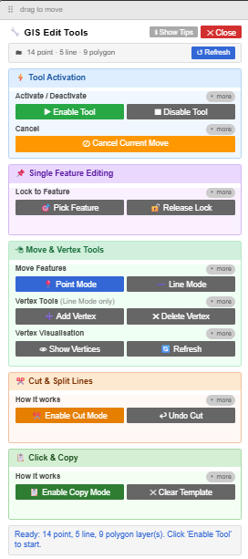

ArcGIS Web Map Enhancement Suite · Documentation & Install
If it's hidden, use the shortcut for your browser:
Click and drag it up to your browser's bookmarks bar — just like moving a tab.
🔧 GIS ToolsThese are lightweight Chrome extensions that run automatically in the background on ArcGIS Map Viewer pages. Unlike the bookmarklet tools above, extensions require a one-time install but need no action each session — they are always on.
Eliminates Map Viewer editor lag caused by large contingent-value matrices. Speeds up both edit form initialization and in-editor field interaction. Server-side validation still runs on save.
Right-click arcgis-cv-killer.zip → Extract All. Place the resulting folder somewhere permanent — Chrome loads the extension directly from this folder, so don't delete or move it after install.
In Chrome, navigate to chrome://extensions in the address bar, or go to the three-dot menu → Extensions → Manage Extensions.
Toggle the Developer mode switch in the top-right corner of the extensions page. This unlocks the ability to load extensions from your own files.
Click Load unpacked (top-left), then navigate to and select the arcgis-cv-killer folder you unzipped in Step 1. The extension appears in the list immediately.
The extension runs automatically every time you open a Map Viewer page. You do not need to click anything to activate it each session.
🛡️[CV-Killer] Active @ ... near the top of the console output.chrome://extensions and stop working until you reload it from its new location.
Launching the Tool Panel
Navigate to your Map Viewer or Experience Builder app and wait for the map to fully load.
Click the bookmark in your bookmarks bar. The dark GIS Tools panel will appear in the top-left corner of the page.
Tools load on demand from GitHub when you click them. The first load may take a moment — watch the status bar at the bottom of the launcher for confirmation before using the tool.
Use the ✕ on individual tool panels to close them, or click ⬛ Close All Tools at the bottom of the launcher to reset everything at once.
Panel Controls
Click and drag the panel header bar to move the launcher anywhere on screen so it doesn't block your map.
Click the ▾ button in the header to collapse the launcher to just the title bar, freeing up screen space while keeping it accessible.
The red ✕ button closes the launcher and all open tools. Click the bookmark again at any time to relaunch it.
Click any group header (Geometry, Packages, etc.) to collapse or expand that category to keep the panel tidy.
General Tips & Gotchas
